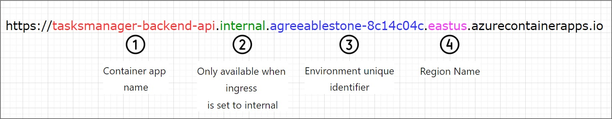

Module 2 - Communication Between Microservices in Azure Containers Apps (ACA)¶
Module Duration
60 minutes
In this module, we will add a service named ACA Web API – Frontend as illustrated in the architecture diagram. This service will host a simple ASP.NET Razor pages web app which allows the end users to manage their tasks. After that we will provision Azure resources needed to deploy the service to ACA using Azure CLI.
{kind=link}
1. Deploy Razor Pages Web App Frontend Project to ACA¶
We will assume that you still have the same PowerShell console session opened from the last module which has all the powershell variables defined from module 1. We need to add the below PS variables:
- Now we will build and push the Web App project docker image to ACR. Use the below command to initiate the image build and push process using ACR. The. at the end of the command represents the docker build context. In our case, we need to be on the parent directory which hosts the .csproject.
az acr build --registry $ACR_NAME --image "tasksmanager/$FRONTEND_WEBAPP_NAME" --file 'TasksTracker.WebPortal.Frontend.Ui/Dockerfile' .
tasksmanager/tasksmanager-frontend-webapp has been created and there is a new docker image with a latest tag is created.
- Next, we will create and deploy the Web App to ACA using the following command. Remember to replace the placeholders with your own values:
az containerapp create \
--name "$FRONTEND_WEBAPP_NAME" \
--resource-group $RESOURCE_GROUP \
--environment $ENVIRONMENT \
--image "$ACR_NAME.azurecr.io/tasksmanager/$FRONTEND_WEBAPP_NAME:latest" \
--registry-server "$ACR_NAME.azurecr.io" \
--env-vars "BackendApiConfig__BaseUrlExternalHttp=<url to your backend api goes here. You can find this on the azure portal overview tab. Look for the Application url property there.>/" \
--target-port 80 \
--ingress 'external' \
--min-replicas 1 \
--max-replicas 1 \
--cpu 0.25 --memory 0.5Gi \
--query configuration.ingress.fqdn
Tip
Notice how we used the property env-vars to set the value of the environment variable named BackendApiConfig_BaseUrlExternalHttp which we added in the AppSettings.json file. You can set multiple environment variables at the same time by using a space between each variable.
The ingress property is set to external as the Web frontend App will be exposed to the public internet for users.
After your run the command, copy the FQDN (Application URL) of the Azure container app named tasksmanager-frontend-webapp and open it in your browser, and you should be able to browse the frontend web app and manage your tasks.
3. Update Backend Web API Container App Ingress property¶
So far the Frontend App is sending HTTP requests to publicly exposed Web API which means that any REST client can invoke this API. We need to change the Web API ingress settings and make it only accessible for applications deployed within our Azure Container Environment only. Any application outside the Azure Container Environment will not be able to access the Web API.
-
To change the settings of the Backend API, execute the following command:
Want to know more about the command?
When you do this change, the FQDN (Application URL) will change, and it will be similar to the one shown below. Notice how there is an Internal part of the URL. https://tasksmanager-backend-api.internal.[Environment unique identifier].eastus.azurecontainerapps.io/api/tasks/
If you try to invoke the URL from the browser directly it will return 404 as this Internal Url can only be accessed from container apps within the container environment.
The FQDN consists of multiple parts. For example, all our Container Apps will be under a specific Environment unique identifier (e.g. agreeablestone-8c14c04c) and the Container App will vary based on the name provided, check the image below for a better explanation.

{kind=link}
-
Now we will need to update the Frontend Web App environment variable to point to the internal backend Web API FQDN. The last thing we need to do here is to update the Frontend WebApp environment variable named
BackendApiConfig_BaseUrlExternalHttpwith the new value of the internal Backend Web API base URL, to do so we need to update the Web App container app and it will create a new revision implicitly (more about revisions in the upcoming modules). The following command will update the container app with the changes:
Success
Browse the web app again, and you should be able to see the same results and access the backend API endpoints from the Web App.